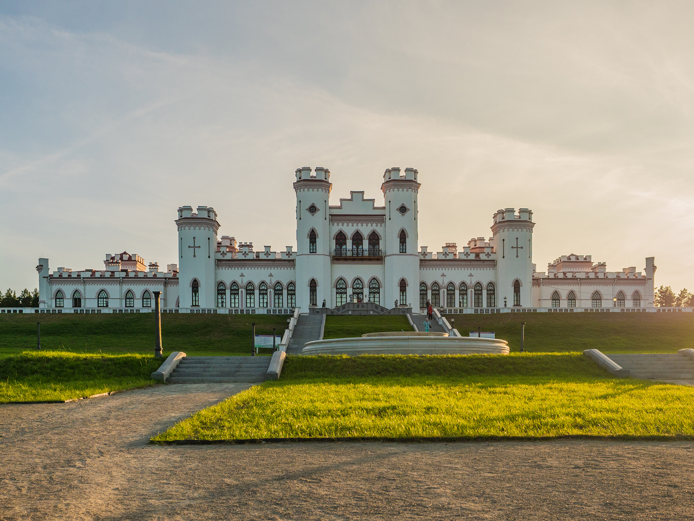
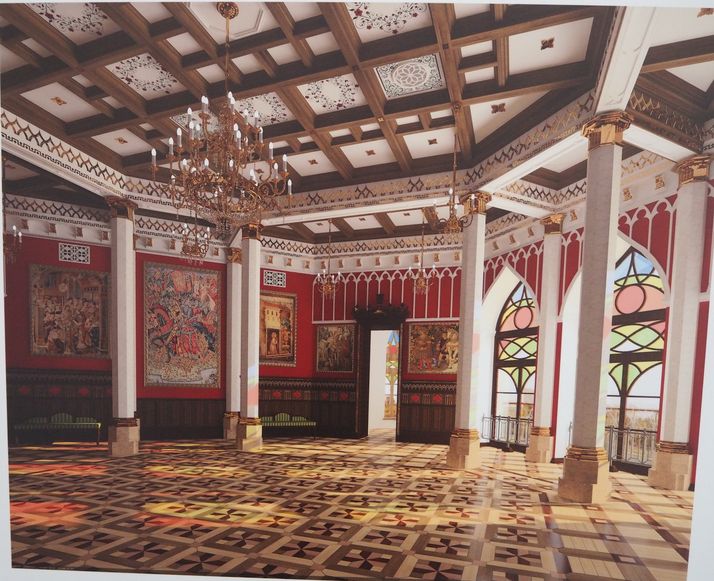

.
Дворец Пусловских


Дворец Пусловских (также известен как Коссовский замок) — дворец,
расположенный в белорусском Коссово (Ивацевичский район, Брестская
область).Местечко Коссово известно с 1494 года, когда великий князь
литовский Александр Ягеллончик, отдал эти земли своему подскарбию Яну
Хрептовичу. На протяжении нескольких столетий владельцами Коссова были
разные знатные семьи — Хрептовичи, Сангушко, Флеминги, Чарторыйские,
Сапеги. В 1821 году особняк был приобретён Войцехом Пусловским, основавшим
в Коссово фабрику ковров, а в его окрестностях заложившим либо
отремонтировавшим около 60 храмов. Именно Войцех в 1830 году начал
строительство роскошного дворца[4]. После особняк перешёл к его наследнику
— сыну Вандалину Пусловскому, крупному промышленнику и любителю искусств,
продолжившему строительство дворца. Автор проекта — варшавский архитектор
Франтишек Ящолд, а во второй половине века реконструкцией дворца занимался
Владислав Маркони[4]. Дворец был построен в 1838 году. Дворец удачно
вписан в живописный парковый пейзаж. Возводя свою резиденцию в этом месте,
Пусловские связывали строительство дворца с соседней исторической
усадьбой, где в 1746 году родился руководитель
национально-освободительного восстания 1794 года генерал Тадеуш Костюшко.
Дворец Пусловских и древняя усадьба Костюшек вместе с парком создали
уникальный дворцово-парковый ансамбль, но на его долю выпали очень сложная
судьба и тяжёлые испытания. Среди гостей дворца можно перечислить
множество известных лиц, в том числе литератора, музыканта и художника
Наполеона Орду, писателей Генрика Сенкевича и Элизу Ожешко, маршала Юзефа
Пилсудского, историка и писателя Вацлава Ластовского и др. Благодаря
рисункам Наполеона Орды, сегодня мы знаем, как выглядел дворец во время
Пусловских[5]. Третий владелец Леонард Пусловский продал особняк за 700
тысяч рублей, чтобы погасить карточные долги. Дворец был приобретён
русским купцом Александровым, который несколько позже перепродал его по
двойной цене княгине Анне Трубецкой. После владельцем поместья стала
княгиня Абомалек, а затем — князь Ольденбургский[5]. Во время Первой
мировой войны дворец был разграблен и частично разрушен[5]. Исчезла
коллекция редких рукописей, статуй, картин и все ценности[2]. Безвозвратно
уничтожили сад и оранжереи[5]. До наших дней от них сохранились только
несколько кустов сирени и боярышника[2]. Значительная часть ценностей была
вывезена за границы страны. С 1921 по 1939 год дворец принадлежал Польше.
После проведённой реставрации он использовался в качестве администрации
староства Косовского повята и училища садоводства[2][4]. До 1939 года в
ряде залов сохранились печи и камины. С сентября 1939 по 1941 год во
дворце размещались части Красной армии. Самые большие разрушения постройки
получили во время Второй мировой войны, хотя оккупанты не тронули
дворец[1]. На его территории и в городе были созданы 4 гетто, в которых
было уничтожено практически всё еврейское население Коссово, из-за чего
количество его жителей уменьшилось в семь раз[5]. В 1944 году произошёл
большой пожар, устроенный местными партизанами, уничтоживший все остальные
помещения и декоративную отделку[4]. Были повреждены фундаменты, часть
стен обвалилась, отсутствовала крыша, только частично уцелели витражи.
Дворец был сожжён, поскольку партизаны полагали, что он может
использоваться нацистами под госпиталь, хотя к тому времени оккупанты уже
оставили Коссово. Вместе с дворцом был сожжён и дом Костюшко. После войны
в советское время дворец и вся земля при нём стали собственностью
Государственного лесного фонда, итогом деятельности которого стало
уничтожение всех ценных пород деревьев. На террасах были высажены сосны,
на протяжении многих лет прятавшие постройки[6]. В 1947 году Коссовский
райисполком начал работы по частичному приспособлению замка под детский
дом. Однако работы оказались не по силам исполкому и были прекращены.
Архитекторами государственного предприятия «Брестреставрацияпроект» были
разработаны план восстановления дворца и усадьбы Тадеуша Костюшко, а также
реконструкции парка как единого дворцово-паркового ансамбля. Согласно
постановлению Совета Министров Республики Беларусь от 3 июня 2016 года №
437 Коссовский замок был включён в число 27 объектов, расходы на
сохранение которых (в части капитальных расходов) могут финансироваться из
республиканского бюджета[7]. 16 июня 2021 года министр культуры заявил,
что объект готов на более чем 80 % и срок окончания работ — декабрь 2022
года